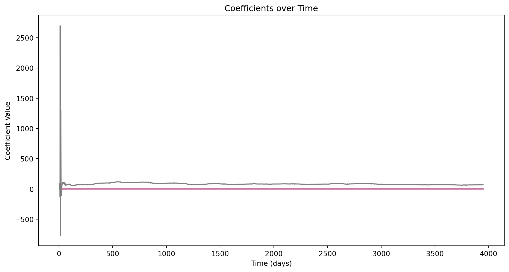
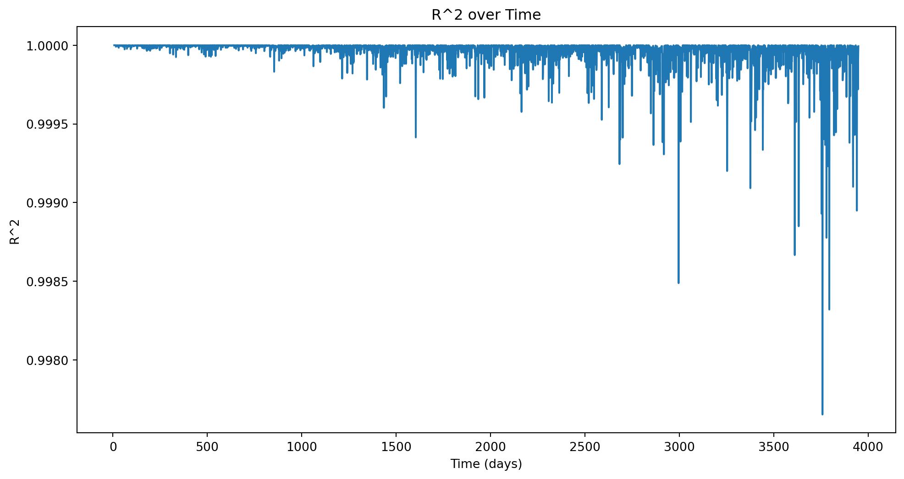
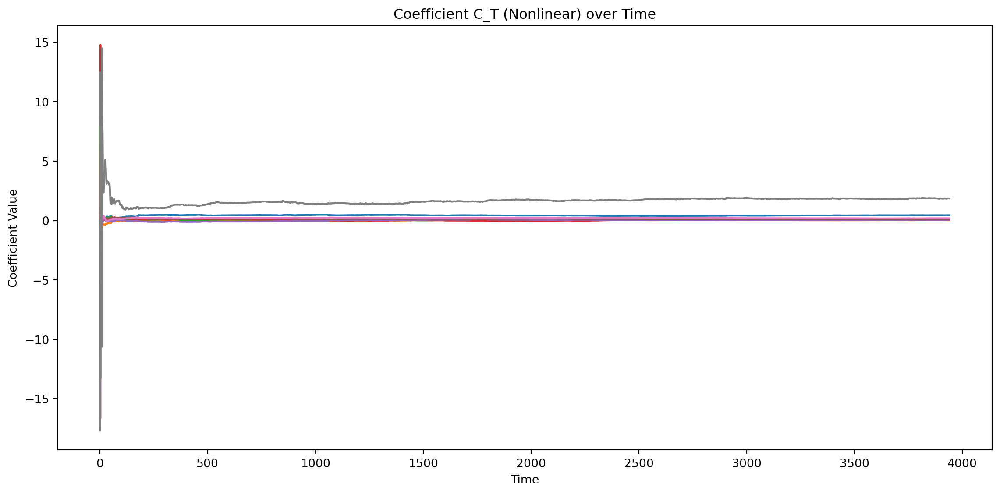
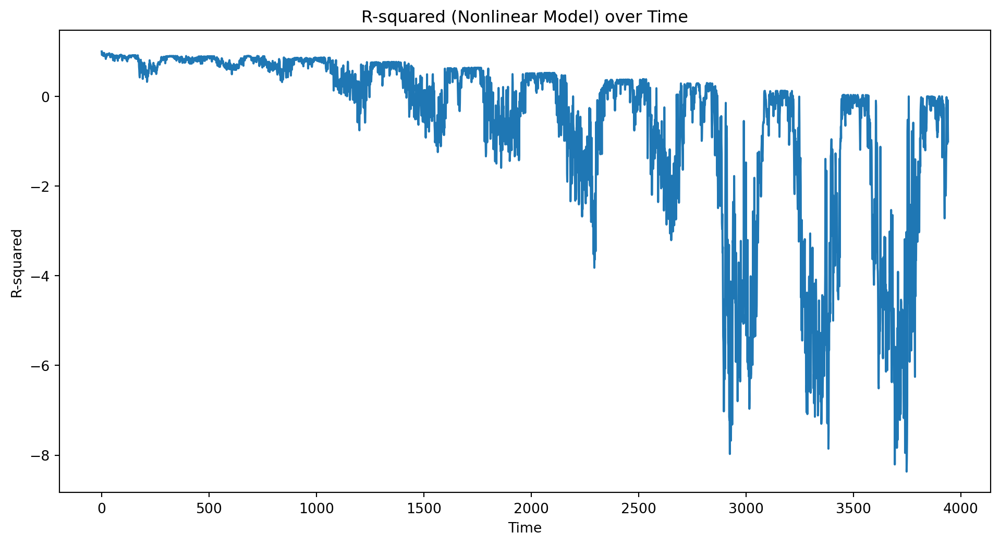
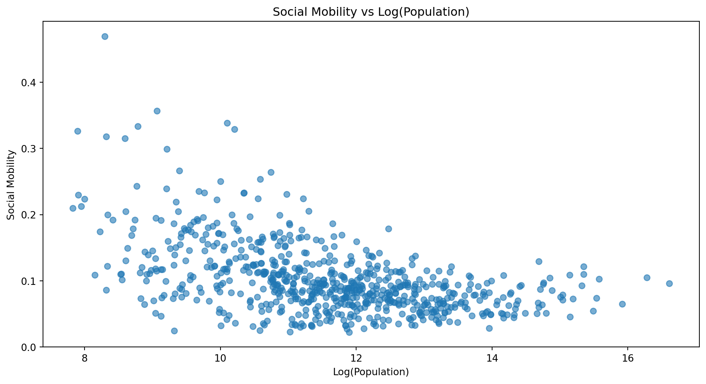

DATA 609 - Homework 2: Applications of Least Squares
Author
Eddie Xu
Instructions
Please submit a .qmd file along with a rendered pdf to the Brightspace page for this assignment. You may use whatever language you like within your qmd file, I recommend python, julia, or R.
Problem 1: Online Updating for Least Squares and Autoregressive Time Series Models
Many applications of least squares (and other statistical methods) involve , in which data is collected over a time period and the statistical model is updated as new data arrives. If the quantity of data arriving is very large, it may be inefficient or even impossible to refit the entire model on the entire dataset. Instead, we use techniques (often referred to as which take the current model as a starting point and update them to incorporate the new data.
The structure of least squares problems makes them amenable to online updating (sometimes this is called “recursive” least squares). The structure of the problem is as follows, at time \(t\) we receive a vector of observations \(\mathbf{a}_t\) and an observation of our target variable \(b_t\).
The full set of all observations and target variable data that we have received up to time \(t\) is contained in the following matrix and vector:
which says that row \(j\) of the matrix \(A_{(t)}\) is the \(j\)th observation \(\mathbf{a}_j^T\), and the \(j\)th entry of \(\mathbf{b}_{(t)}\) is \(b_j\).
Here we assume that the vectors \(\mathbf{a}\) each contain \(n\) observations, so that \(A_{(t)}\) is a \(t\times n\) matrix and the vector \(\mathbf{b}_{(t)}\) is a \(t\)-vector.
As long as \(t>n\), i.e. the number of time observations is greater than the number of features/data points in each observation, we can fit a linear model predicting the target as a function of the features \(\mathbf{a}\) by solving the following system of equations:
As the length of the time series increases, the computational difficulty of solving this problem also increases. However, it is possible to re-use work done on the previous time step to avoid solving the full system at each step.
This algorithm is based on the fact that the Gram Matrix\(A^T_{(t+1)}A_{(t+1)}\) can be calculated from the Gram matrix \(A^T_{(t)}A_{(t)}\) from the previous time step. \[
A^T_{(t+1)}A_{(t+1)} = A^T_{(t)}A_{(t)} + \mathbf{a}_{t+1}\mathbf{a}_{t+1}^T
\]
Similarly, the product \(A^T_{(t+1)} \mathbf{b}_{(t+1)}\) can also be updated from thevalue on the previous time step:
We can write an efficient algorithm to compute the updated least squares solution as follows:
Step 1: Pick an initial time \(t\) such that \(A_{t}\) is square or tall so that the least squares problem can be solved (i.e. wait for enough data to have built up before your start) and then calculate the Gram matrix and the product \(A^T_{t} \mathbf{b}_t\)
Then you can repeat Step 2 to find \(\mathbf{x}_{t+1}\). This algorithm can be improved upon slightly using the Matrix Inversion Lemma/Woodbury Formula, which could be a topic for a project (see note at the end which mentions Kalman filters).
You are going to use this algorithm to make a linear, autoregressive model that predicts total day-ahead citibike trips from the daily high temperature and the number of daily citibike trips taken each of the past 7 days. The data is contained in the file daily_citibike_trips.csv.
Specifically, for each time point \(t>7\) , fit the following model as a least squares estimation problem:
Here, each \(N_{trips,\tau}\) stands for the number of citibike trips on the \(t\)th day of the time series, \(T\) stands for the forecast high temperature in New York City that day, and the coefficients \(C_i\) and \(C_T\) are the decision variables.
Find the coefficients \(C_{i,t}\) and \(C_{T,t}\) that minimize the mean square errors on all the observed citibike trips prior to time \(t\). Use the recursive least squares optimization outlined in the preamble to this problem to calculate the coefficients for each time point, and plot how they and the \(R^2\) of the model change over time.
What patterns do you notice in how the regression coefficients and \(R^2\) change over time?
Tip: Be very cautious when coding about the dimensionality of matrices and arrays. In python, a @ a.T will be an 8x8 matrix if a.shape = (8,1). However, by default a.shape = (8,), indicating that a is not being treated as either a row or column vector. For this problem it is important that the vectors are either row or column vectors, and not arrays without such an orientation. In python, you can use numpy.reshape to adjust.
We have included temperature as a variable because it probably influences the decision to ride a citibike. However, the relationship could be nonlinear, as both extreme high and low temperatures make bike riding less comfortable. With this idea in mind, create a new feature by choosing a nonlinear function of the temperature \(T\) that represents the potential for both high and low values of \(T\) to the same impact on predicted ridership.
Use least squares optimization to fit an autoregressive time series model, replacing \(T\) with the value of your new feature \(f(T)\) in the time series. How does the temperature dependence coefficient differ between this model and the one you fit in (a)? Does the accuracy of the model improve or get worse using the new feature?
# load dependenciesimport numpy as npimport pandas as pdimport matplotlib.pyplot as plt# read in dataciti_bike_raw_link ='https://media.githubusercontent.com/media/georgehagstrom/DATA609Spring2025/refs/heads/main/website/assignments/labs/labData/daily_citibike_trips.csv'citi_data = pd.read_csv(citi_bike_raw_link)## Part A# get values and define variablestrips = citi_data['daily_trips'].valuestemp = citi_data['TMAX'].valuesdays =7# set up gram matrix and vectorsG = np.zeros((days +1 , days +1))h = np.zeros(days +1)# define other variables for RLScoefficients, r_squared, predictions = [], [], []# perform the RLSfor t inrange(days, len(trips)): a_t = np.concatenate([trips[t-days:t], [temp[t]]]) b_t = trips[t] # append the matrix and vector G += np.outer(a_t, a_t) h += b_t * a_t# solve for coefficients x_t = np.linalg.solve(G, h) coefficients.append(x_t)# solve for r_squared predictions = np.dot(a_t, x_t) residual = b_t - predictions ss_total = np.sum((citi_data['daily_trips'][days:] - np.mean(citi_data['daily_trips'][days:]))**2) ss_residual = np.sum(residual**2) r_squared.append(1- (ss_residual / ss_total))# save both coefficients and r squared in an arraycoefficients = np.array(coefficients)r_squared = np.array(r_squared)# plot resultsplt.figure(figsize=(12, 6))for i inrange(days): plt.plot(range(days, len(trips)), coefficients[:, i])plt.plot(range(days, len(trips)), coefficients[:, days])plt.xlabel('Time (days)')plt.ylabel('Coefficient Value')plt.title('Coefficients over Time')plt.show()plt.figure(figsize=(12, 6))plt.plot(range(days, len(trips)), r_squared, label='R^2')plt.xlabel('Time (days)')plt.ylabel('R^2')plt.title('R^2 over Time')plt.show()## Part B# calculate the nonlinear temperaturenonlinear_temp = (temp -25) **2# define new gram matrix and vectorG_nonlinear = np.zeros((days +1 , days +1))h_nonlinear = np.zeros(days +1)# define other variables for RLScoeff_nonlinear, r_squared_nonlinear, predictions_nonlinear = [], [], []# perform RLS for nonlinearfor t inrange(days, len(trips)): a_t_nl = np.concatenate([trips[t-days:t][::-1], [nonlinear_temp[t]]]) # update gram matrix G_nonlinear += np.outer(a_t_nl, a_t_nl) h_nonlinear += a_t_nl * trips[t]# solve for coefficients using least squares (Gx = h) x_t_nl = np.linalg.solve(G_nonlinear, h_nonlinear) coeff_nonlinear.append(x_t_nl)# calculate predictions y_hat_nl = np.dot(a_t_nl, x_t_nl) predictions_nonlinear.append(y_hat_nl)# calculate new r squared ss_total_nl = np.sum((citi_data['daily_trips'][days:t +1] - np.mean(citi_data['daily_trips'][days:]))**2) ss_residual_nl = np.sum((citi_data['daily_trips'][days:t +1] - y_hat_nl)**2) r_squared_nonlinear.append(1- (ss_residual_nl / ss_total_nl))# convert coefficent and new r_squared into arrayscoeff_nonlinear= np.array(coeff_nonlinear)r_squared_nonlinear = np.array(r_squared_nonlinear)# plotplt.figure(figsize=(12, 6))plt.plot(coeff_nonlinear[:, :-1]) # Plot only C_1 to C_7plt.title('Coefficients (Nonlinear Model [First 7 days]) over Time')plt.xlabel('Time')plt.ylabel('Coefficient Value')plt.plot(coeff_nonlinear[:, -1], label='(Nonlinear)') # Plot C_Tplt.title('Coefficient C_T (Nonlinear) over Time')plt.xlabel('Time')plt.ylabel('Coefficient Value')plt.tight_layout()plt.show()# Plot R-squared for nonlinear modelplt.figure(figsize=(12, 6))plt.plot(r_squared_nonlinear)plt.title('R-squared (Nonlinear Model) over Time')plt.xlabel('Time')plt.ylabel('R-squared')plt.show()




Problem 2: Weighted Least Squares
The file social-mobility.csv contains data on the fraction of individuals born in the years 1980-1982 to parents in the bottom 20% of the income distribution who reach the top 20% of the income distribution by the time they turn 30 in a large number of municipalities throughout the United States. The dataset also contains additional variables that describe other socio-economic differences between the cities in the dataset.
Make a scatter-plot of mobility versus population (use a log-scale for population). What do you notice about the variance of social mobility as a function of population? This is a common feature of nearly every dataset containing geographic regions with widely different populations.
Assume that the number of children born in families making below the 20th percentile of the income distribution in each city is linearly proportional to the city population. Write down a formula for how the variance of each measurement of the social mobility should depend on the measured social mobility and the population. Hint: start with either the formula for the variance of binomial counts or look up the variance of a proportion derived from a binomial distribution. Don’t worry about constant factors when deriving this formula.
Use weighted least squares to calculate an estimate of how social mobility depends on commute time and student-teacher ratio, using weights calculated based on the variance estimate derived in (b).
Compare the coefficients to those derived from ordinary least squares with no weights.
# load dependenciesimport numpy as npimport pandas as pdimport matplotlib.pyplot as plt# read in datasocial_url ='https://media.githubusercontent.com/media/georgehagstrom/DATA609Spring2025/refs/heads/main/website/assignments/labs/labData/social_mobility.csv'social_mobility_data = pd.read_csv(social_url)## Part A# log tranform the population and define the variable for mobilitylog_pop = np.log(social_mobility_data['Population'])mobility = social_mobility_data['Mobility']# plotplt.figure(figsize=(12, 6))plt.scatter(log_pop, mobility, alpha=0.6)plt.xlabel('Log(Population)')plt.ylabel('Social Mobility')plt.title('Social Mobility vs Log(Population)')plt.show()

Problem 2 Part b Solution
The binomial distribution formula is defined below:
\[
Variance = n * p * (1 - p)
\]
# load dependenciesimport statsmodels.api as smimport pandas as pd# read in datasocial_url ='https://media.githubusercontent.com/media/georgehagstrom/DATA609Spring2025/refs/heads/main/website/assignments/labs/labData/social_mobility.csv'social_mobility_data = pd.read_csv(social_url)social_mobility_data = social_mobility_data[["Commute","Student_teacher_ratio","Mobility","Population"]]social_mobility_data = social_mobility_data.dropna()## Part C# define variablecommute = social_mobility_data['Commute']ratio = social_mobility_data['Student_teacher_ratio']population = social_mobility_data['Population']mobility = social_mobility_data['Mobility']# define both X and YX = pd.DataFrame({'commute':commute, 'ratio':ratio})X = sm.add_constant(X)print(X)Y = mobilityweights = (mobility * (1- mobility))/population# OLS modelols_model = sm.OLS(Y, X).fit()# WLS modelwls_model = sm.WLS(Y, X, weights=weights).fit()print("OLS Coefficients")print(ols_model.summary())print("WLS Coefficients")print(wls_model.summary())
In this problem you will use Markowitz Portfolio Optimization to construct a set of portfolios that aim to achieve target expected rates of return while minimizing risk. The file stock_returns.csv contains information on daily asset returns from 2020-2024 for a group of assets, consisting mostly of large-cap stocks but also a handful of exchange traded funds that correspond to US Treasury Bonds and Notes with varying maturities.
You will divide the data into two time periods, a training period (2020-2022) and a testing period (2022-2024). The data in the stock_returns.csv is stored in a long format, with the following variables:
Company - The ticker symbol that identifies the stock
date - The date to which the data corresponds
adjusted- the closing price of the stock, adjusted for special events like dividends and stock splits
return - the ratio of the current adjusted close to the adjusted close on the previous trading day
log_return- the natural logarithm of the return
Construct a vector (we call it \(\mu\)) containing the annualized rate of return over the training period (for the \(i\)th stock, you can use the formula: \(\mu_i = \exp\left(0.5\sum_{t} \mathrm{log\_return}_i(t)\right)\)), or the square root of the total return over the first two years of data, and daily return covariance \(\Gamma\).
Hint: Possible workflow if working in python: convert your data to a wide format using pandas, extract the values into a numpy ndarray, and then use the function np.cov.
Then solve the following constrained least squares problem to calculate optimal portfolios achieving a fixed rate of return with minimum variance:
\[
\begin{aligned}
\min_{w} \mathbf{x}^T\Gamma \mathbf{x}, \\
\mathbf{w}^T\mathbf{\mu} = r, \\
\sum_{i} w_i = 1
\end{aligned}
\] Here \(\mathbf{w}\) is a vector containing the investment allocations into different assets, and \(r\) is the target rate of return.
Calculate optimal portfolios based on the 2020-2022 data for \(r=1.05\), \(r=1.10\), and \(r=1.20\).
Plot the cumulative value of each portfolio over time, assuming that an initial investment is made at the start of the period and that there is no rebalancing of the portfolio, i.e. \(r_{T} = \sum_{i=1}^n w_i\Pi_{t=1}^T r_{it}\), where \(r_{it}\) is the return of asset \(i\) on trading day \(t\), (hint: np.cumprod allows you to efficiently calculate this quantity). Make the plot for both the training and test sets of returns.
For each of the 3 portfolios also report:
The annualized return on the training and test sets;
The risk on the training and test sets, defined as the realized variance of the daily return;
The asset with the maximum allocation weight, and its weight;
The initial leverage, defined as \(\sum_{i=1}^n |w_i|\). This number is always at least one, and it is exactly one only if the portfolio has no short positions.
Comment briefly on your observations about the different portfolios and the difference between their training and testing performance.
It is well known that optimal portfolios constructed using the Markowitz procedure perform much more poorly out of sample compared to in sample. This is due to a variety of reasons, one of which is that the procedure assumes that future returns are equal to past returns, another that the correlation structure of the market might change over time, and finally, when there are many assets there is the potential for overfitting. Repeat the previous problem but introduce a ridge regression/\(l_2\) norm penalty term to the objective function, with a hyperparameter \(\lambda\) governing the size of the penalty term.
Specifically, you will select 10 positive values of \(\lambda\) on a log scale between \(1e-1\) and \(10\) and for each value of \(\lambda\) solve the following penalized regression problem:
for just the single value of \(r=20\%\). Then calculate the performance of each of these regularized Markowitz strategies on both the training and test datasets and plot the the return of the portfolios over both the training and testing period.
For each portfolio, also report:
The annualized return on the training and test sets;
The risk on the training and test sets;
The maximum allocation weight and the asset with maximum allocation;
The initial leverage
Comment on how the different values of \(\lambda\) changed the optimal portfolios and the difference between in-sample and out-of-sample return and variance.
# load dependenciesimport numpy as npimport pandas as pd## Part A# read in datastock_url ='https://media.githubusercontent.com/media/georgehagstrom/DATA609Spring2025/refs/heads/main/website/assignments/labs/labData/stock_returns.csv'stock_return_data = pd.read_csv(stock_url)
Potential Projects Based on this Homework:
Recursive least squares is a gateway to several important techniques that would lead to good projects. The Kalman Filter or Bayes Filter is an algorithm that recursively estimates a statistical model while allowing the underlying coefficients (or state) of that model to undergo dynamical evolution (as a simple example, think of correcting noisy measurements of the GPS location of a drone using Newtownian physics). These are some of the most useful prediction algorithms and can be applied to many areas, including econometrics, web traffic prediction, and vehicle location. For a more math related project, studying the accuracy of the Woodbury formula could be interesting.